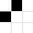
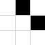
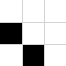
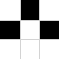

Elemental Image Patches
Consider a large corpus of monochrome images, such as all images on the public internet converted to greyscale. Now consider, for a given N, each possible N x N image patch, i.e. every possible N x N region in all images including overlapping regions.
For N=2 and an 8 bit greyscale there are a possible 2^(4*8) ≅ 1.8 * 10^19 patch states, reducing to 4096 patch states with 3 bit pixels, which is still a reasonably good encoding, i.e. a human can still recognize the content of 3 bit greyscale images (8 greyscale levels) in most cases. However, if we increase N to 3 and beyond then once again the number of states become very large, e.g. for N=3 and 3 bit pixels we have 2^(9*3) or about 134 million states.
For the N=2 and 3 bit pixels case we could now compute a histogram over the 4096 possible patch states, and choose to encode images by using only the most frequent patches. Alternatively we could define a set of bichromatic patches (i.e. strictly black and white pixels), and for each real image patch find the nearest matching bichromatic patch and a factor that describes how close the image patch is to that bichromatic patch.
E.g. consider the bichromatic patch with the two left pixels set to black, and the two right pixels set to white white, and an image patch from a straight vertical edge in which there are two different greyscales either side of the edge, e.g. see the left hand edge of the building in Figure 1.
Although the near white pixels of the building wall are a strong match for the pure white pixels in the bichromatic patch, the left hand pixels are a light grey, so are a poor match for the pure black pixels. Hence, if we say the patch is a match of 0.5 then it's not clear whether one or both sides are poor matches, hence, although this encoding may have some uses, recreating the original images is not one of them (and thus this encoding is not a good choice for a generative model).
To address this problem we can extend the encoding to use two values, one each for the black and white pixels of the bichromatic patch, or equivalently, two greyscale values. Interestingly, the closest match bichromatic patch can be found first, and then the two greyscale values found by taking the mean of the corresponding pixels in the image patch.
The encoding is further improved because the patches are overlapping, thus, to obtain an output value for a pixel in generative mode we take the mean pixel values from all patches a given pixel is in.
At this point it's worth mentioning JPEG encoding which uses non-overlapping 8 x 8 patches (called blocks). At 8 x 8 a single block can represent a reasonable amount of image structure, and to cope with this JPEG uses a kind of spatial frequency matching similar to the fourier transform, along with the ability to match multiple overlapping frequencies within one patch.
If instead of an N=8 patch (as per JPEG) we use a much smaller patch size of say N=3, then the amount of structure within a patch is limited and thus frequency matching within a patch is not practical. Instead consider a set of 'exemplar' or 'elemental' bichromatic patches. What would a good set of patches lookup like, for say N=3? And can these be automatically discovered?
3 x 3 Patches



 
